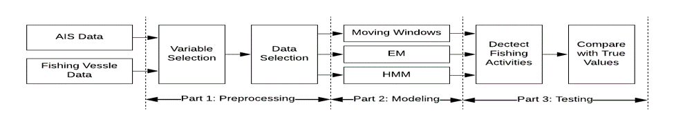
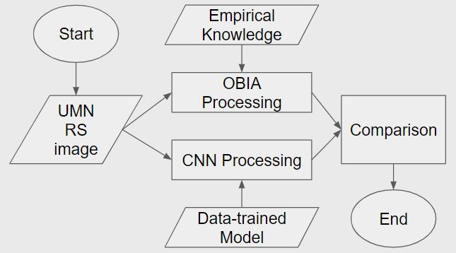

About Me
To me, Geographic Information Science (GIS) incorporates geographic and time factors into decision making. Furthermore, with the combination of GIS and Web 2.0, WebGIS can visualize geographic information to the public, and gather volunteered geographic information from the public.
I just graduated from the University of Minnesota with my master’s degree in GIS. I obtained my bachelor degrees in GIS and Geomatics with a minor in computer science from Wuhan University and the University of Waterloo, respectively. Over the past four years, my passion for GIS has continued to grow, and I am especially interested in the fields of spatial statistics, application development, and WebGIS. For my future career, I am seeking a job at a private agency or research organization as a GIS scientist or developer.
Since GIS is an interdisciplinary science, gaining experience and knowledge from a variety of fields are crucial for a GIS professional. Owing to my background and experience, I am familiar with spatial analysis, spatial databases, remote sensing, web mapping, and a variety of programming languages, including C, Python, and JavaScript. I have hands-on experiences with GI-systems, such as ArcMap, ArcGIS pro, ArcGIS online, ENVI, ERDAS, and QGIS. During university, I worked as a graduate research assistant at U-Spatial, and I primarily worked on a Groundwater project funded by DNR Serendipity Grant. I developed a groundwater web app using ArcGIS JavaScript API for academic support and dissemination proposes. My duties also include researching and answering questions about GIS, RS, and spatial computing from students and faculty.
Clifton StrengthsFinder identifies my top 5 themes as Input, Learner, Developer, Activator, and Communication, which I think suits me well. The themes Input, Learner, and Activator are demonstrated by my eagerness to learn and turn thoughts into action. During my fourth year as an undergraduate, I learned web design by myself from scratch. Since then, I have created many mapping websites for carpool sharing, field photo exhibition, and groundwater data visualization. I always have a passion for learning more, and I am learning ML and ANN to equip myself for the new generation big spatial data analysis. The themes of Developer and Communication are related to my ability to work in a group. When I worked as a GIS technical support intern at China Aerospace Science and Industry Corporation, I went to the Philippines as a member of the on-site survey team and cooperated with four partners from the Philippines and Canada.
Thank you for your time! If you're interested in working together, please contact me.
Resume
Download ResumeWork Experience
Research Assistant
Sep 2018 - Present
U-Spatial - University of Minnesota
I am now a graduate research assistant at U-Spatial and I am developing a groundwater web app using ArcGIS JavaScript API, which shows statistic and analytic results of groundwater for academic support and dissemination proposes. My duty also includes researching and answering questions about GIS, RS and spatial computing from students and faculty.
GIS Technical Support Intern
June 2018 - Aug 2018
Global Aerospace Data Integration Center - CASIC
I participated in the Philippine Environmental Monitoring project, which aims to utilize spatial data to monitor the environment condition and help government to make reasonable plan to restore the environment. As a member of the on-site survey group, I went to the Philippines and cooperated with partners from China, the Philippines and Canada.
Web Designer
July 2017 - Sept 2017
Chinese Academy of Science
It is a summer intern after graduation, and I was working for professor Xiangliang Xu. I helped him design two website for presenting analysis maps and field photos.
Education
Master Degree
Sept 2017 - Present
University of Minnesota
I am a current graduate student of MGIS program.
Bachelor Degree
July 2015 - June 2017
University of Waterloo
I majored in Geomatics and minored in Computer Science. I also got the diploma of Excellence in GIS
Bachelor Degree
Sept 2013 - June 2017
Wuhan University
I studied GIS in WU, and I applied to attend the 2+2 program between WU and UW.
Activities
Volunteer - Front Desk
May 2016 - August 2016
University of Waterloo Glow Center
Volunteer - Salesclerk
May 2016 - August 2016
Environment Student Socity Non-profit Coffee Shop
Volunteer - Office Support
August 2015
Wuhan Strawberry Music Festival - Office Support
Vice-minister
September 2013 - July 2015
Dept. of Public Information of College Student Union at WHU
Member
Auguest 2014
GIS Companies (Wuhan/Guangzhou) Investigations Team
Awards & Certificate
Excellent in GIS
June 2017
University of Waterloo
Entrance Scholarship
July 2015
University of Waterloo
Projects


Quantitative Assessment and drone Data Processing
Description
In the early 1900s, Rice Creek’s channel was straightened for agriculture purpose. However, without twists and turns, the water in the channel moves faster, which accelerates the erosion of steam bank and bed. To mitigate the issue, the Rice Creek Meander Restoration Project was carried out. Starting form 2015, new meanders have been constructed, and these constructed meanders were left there for one year with filling water to let vegetation establish.
In addition, due to major road construction at the intersection of county road H and I-35W, Rice Creek channel around this section was relocated for road construction.
Our investigation group supported USGIS to assess the condition of one constructed meander. The study area is the upstream of the relocated channel around intersection of county road H and I-35W. This was a group project of my master course, started from October 17, and ended at December 17.
Methodology
1. We used the phantom 4 drone from DJI to collect geotagged-image. The drone collection plan was made on Pix4D Capture.
2. Multiple processing tool including Pix4D, Drone Deploy, and Open Drone Map were utilized to reconstruct 3D models from geotagged-image.
3. The accuracy of these three 3D models were assessed and compared.
4. The Digital elevation model(DEM) generated using Pix4D and the pervious Lidar generated DEM from USGIS were used for change detection analysis.
Presentation
This project was presented at Minnesota GIS/LIS conference


Field Photo Exhibition, Downloading, and Uploading
Description
This website was created during my internship at the Chinese Academy of Science.
The Field Map website was designed for field photo exhibition, downloading and uploading. There is a database at the server side storing all the field photo and user information. The BaiduMap API was used here for mapping purposes, each mark on the map represents a field photo. The map is also linked to the information bar on the right hand. For example, if the photo category is changed on the information bar, the photos shown on map are changed accordingly. If I click one photo in the information bar, the map will zoom in to the photo and show the photo’s information. Besides, the marker cluster was generated to power up the website’s performance, right click function is added to solve the marker overlay issue; and the search function is also available in the website. The photo download page allows users to download the photos in the customized area from the database, and the upload page allow users to upload the image to the database.
Link
http://www.resdc.cn/FieldPhoto/index.htmlThe Electronic Atlas of Analysis Maps at China-India Border
Description
This website was created during my internship at the Chinese Academy of Science.
The electronic atlas website was designed to display of the analysis maps of the China-India border. BaiduMap API was used here for mapping purposes. The analysis map was transferred to a set of tiles using ArcGIS tile packages. And the tiles were used as the upper layer base map.
The key feature of this website is that all the list content, drop-down menus, and navigation bar, can automatically update when the folder structure is changed at the server side. So, there is no need to change the HTML file when a new category is created or a new analysis map is added.
Link
http://www.resdc.cn/border/index.htmlCompare Rolling Windows, EM, and HMM in AIS Fishing Activity Detection
Description
The objective of the project is to classify the fishing and non-fishing activities using AIS data, which is meaningful because the results can be used to identify illegal fishing. Our main dataset was AIS, which is a tracking system of the vessel. We also acquired fishing vessel data from Global Fish Watch to select trawlers from the AIS dataset. We implemented Rolling Windows, Expectation–Maximization (EM), and Hidden Markov Model (HMM) models to classify the fishing and non-fishing activities and compared the performance of them. HMM model showed slightly better result in the content of our project.
Methodology
Results
Building detection methods comparison of OBIA and CNNs
Description
Nowadays, Deep learning becomes the most popular topic in the scientific world, especially CNN, it totally changes the world of visual imagery analysis. Does it means deep learning methods, can outperform other traditional methods in all scenario? Object detection of buildings on UMN campus is the scenario we examined for this project. We applied OBIA and CNN on the same RS 4-band remote sensing image. OBIA mainly rely on empirical knowledge; while CNN rely on the data-trained model. After we got output from both OBIA and CNN, we compare two methods in the end.
Methodology

{kind=link}
{kind=link}
{kind=link}
{kind=link}
{kind=link}
{kind=link}
{kind=link}
{kind=link}
{kind=link}
{kind=link}
{kind=link}
Skills
The following skill bars indicate my skill level.
Footprints
View my footprints on the earth, click the marker to view my picture.